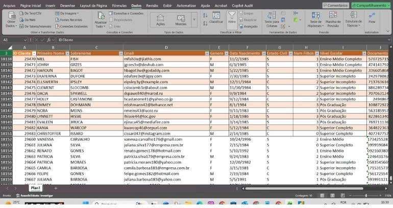
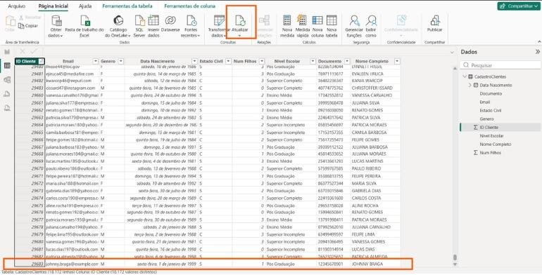

Prepare uma vez, atualize para sempre
Você vai ver na prática a maior vantagem do Power BI sobre planilhas: quando chegam dados novos, basta clicar em Atualizar e todas as limpezas do Power Query são refeitas sozinhas.
- Nível
- Básico
- Duração
- 1h30
- Você vai precisar
- Power BI Desktop (gratuito, Windows)
- Conteúdos
- AtualizarCaminho da fonteEtapas AplicadasConsulta x TabelaFechar e AplicarConfigurações da fonte de dados
01Como funciona na vida real
E quando a empresa receber novos dados? Vou ter que fazer tudo de novo? Não.
Nas empresas, quase ninguém digita dados no Excel. Eles saem de sistemas:
- ERPs (TOTVS, SAP, Protheus, Sankhya…);
- sistemas de vendas, financeiro, estoque e CRM;
- bancos de dados (SQL Server, Oracle, MySQL) e APIs;
- arquivos CSV ou Excel exportados todo dia, semana ou mês.
O trabalho do analista não é limpar tudo de novo a cada arquivo. Ele monta a consulta uma vez e depois só atualiza.
Uma empresa registra 5.000 vendas por dia. Repetir as limpezas manualmente todo dia seria inviável. Com o Power BI, você substitui a base (ou o sistema atualiza sozinho) e clica em Atualizar. Em segundos, os relatórios mostram os dados novos já tratados.
02Atualizando depois de mudar o Excel
Cada consulta sabe onde está o arquivo, por exemplo:
Documentos\PowerBI_Vendas\Bases\
Cadastro Clientes.xlsx
Cadastro Produtos.xlsx
Base Vendas - 2022.xlsxNa atualização, ele volta exatamente nesse caminho, abre o arquivo, lê a planilha pelo nome e refaz as etapas.
- Feche o Power BI (recomendado enquanto você mexe no arquivo).
- Abra
Cadastro Clientes.xlsx. - Vá até a última linha e inclua dois clientes, por exemplo com seu nome.
- Salve e feche o Excel.
Os novos registros precisam seguir o mesmo padrão: mesmas colunas, na mesma ordem, com o mesmo tipo de informação.
- Renomear o arquivo ou movê-lo de pasta;
- Mudar o nome da planilha (Plan1);
- Excluir ou renomear colunas usadas na consulta;
- Mudar o tipo de informação (texto numa coluna de data).

Abra o Vendas.pbix e clique em Página Inicial → Atualizar.
Vá na exibição Tabela, ordene ID Cliente do maior para o menor e confira: seus clientes estão lá, com o nome já mesclado e formatado.
O Power BI localizou o arquivo, leu tudo de novo, removeu linhas e colunas vazias, promoveu cabeçalhos, acertou tipos, mesclou o nome, formatou o texto e carregou. Você não repetiu nenhuma transformação.

03Atualizando pelo Power Query
Consulta (query) e tabela são a mesma estrutura em momentos diferentes do processo.
| Onde | Botão | O que atualiza |
|---|---|---|
| Janela principal | Página Inicial → Atualizar | Todas as tabelas do modelo |
| Power Query | Página Inicial → Atualizar Visualização | A prévia da consulta selecionada (ou todas, pela setinha) |
Quando alguém disser “atualize a consulta”, “edite a tabela” ou “abra a query”, está falando da mesma coisa.
Atualizar não é só “trazer linhas novas”. Se um cliente mudou de e-mail ou foi excluído no Excel, isso também aparece. O Power BI não remenda a tabela antiga: ele lê tudo de novo e recria a tabela do zero.
Mudou algo no Power Query? Enquanto você não clicar em Fechar e Aplicar, a mudança fica só no editor e o relatório continua com a versão antiga.
Se o arquivo mudou de lugar (ou você abriu o .pbix em outro computador), não refaça a consulta. Vá em Página Inicial → Transformar dados → Configurações da fonte de dados → Alterar Fonte… e aponte o novo caminho.
Na aula 9 você vai criar um parâmetro com o caminho da pasta. Aí, trocar de computador vira uma alteração de um único campo.
04Etapas eficientes, atualização rápida
Cada etapa é uma operação que roda de novo em toda atualização. Em bases pequenas não faz diferença; com milhões de linhas e dezenas de tabelas atualizando todo dia, faz.
| Menos eficiente | Mais eficiente |
|---|---|
| Adicionar coluna Nome Completo → excluir Primeiro Nome → excluir Sobrenome (3 etapas) | Selecionar as duas → Transformar → Mesclar Colunas (1 etapa) |
| Alterar tipo várias vezes na mesma coluna | Definir o tipo uma vez, no fim da limpeza |
| Filtrar linhas no fim da consulta | Filtrar o quanto antes (menos linhas nas etapas seguintes) |
O objetivo não é ter o menor número de etapas possível, e sim um processo claro, fácil de manter e sem passos inúteis. Um bom analista investe tempo montando a consulta uma vez e deixa o Power Query fazer o trabalho repetitivo.
05Atividades
A1 · Teste de atualização
BásicoInclua 3 clientes no Excel, atualize e tire um print mostrando os novos IDs no Power BI.
A2 · Alteração e exclusão
BásicoAltere o e-mail de um cliente e exclua outro no Excel. Atualize e confirme que as duas mudanças apareceram.
A3 · Provoque um erro
IntermediárioRenomeie a coluna Sobrenome para Sobre Nome no Excel e atualize. Leia a mensagem de erro, descubra qual etapa quebrou e corrija de duas formas: voltando o nome no Excel e, depois, ajustando a etapa no Power Query.
A4 · Mudança de pasta
IntermediárioCopie a pasta Bases para outro lugar e use Configurações da fonte de dados para apontar o novo caminho sem refazer nenhuma consulta.
06Resumo da aula
- Atualizar = reler a fonte e reaplicar todas as Etapas Aplicadas, na mesma ordem.
- Mantenha nome do arquivo, pasta, nome da planilha e estrutura das colunas.
- A atualização reflete inclusões, alterações e exclusões.
- Mudanças no Power Query só valem depois de Fechar e Aplicar.
- Arquivo mudou de lugar? Configurações da fonte de dados.